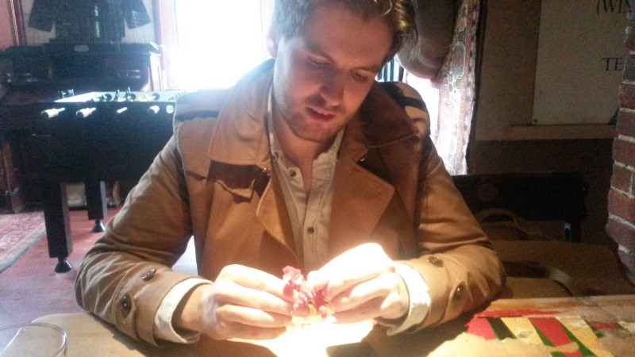

“REALLY?” WAS MORE OR LESS Jake Rodkin’s reaction when Olly Moss said yes. Yes, Olly Moss had said, he was interested in being part of this indie video game company that Jake and his colleague Sean were thinking about. Yes, Olly said again: I’m interested. And, then, okay — that was that.
That Campo Santo would launch with Olly Moss on board was a surprise for a handful of reasons. The British artist and graphic designer, 27, is a major and sought-after talent, known for his work with clients like Mondo, DC Comics, Marvel Studios, Lucasfilm, Studio Ghibli and the Academy of Motion Picture Arts and Sciences. He is not known for making video games. Nor is he really known for working in the way that a project like Campo Santo’s Firewatch needs to be worked on: as a member of a team, serving a shared creative vision, and on a timeline of many months, if not years.
It’s now over a year since Olly Moss said yes, and over six months into his role as Firewatch’s art director, which he performs remotely from his home city of Winchester, England, with frequent trips to Campo Santo’s San Francisco office. Time enough, I thought, to pose the question of whether Olly Moss and game development really suit one another. A fine quest for the Campo Santo Ombudsman!
On a Friday afternoon, I travelled to Winchester to meet with Olly and conduct his six-month performance review. Strictly speaking, this doesn’t fall under the definition of “Ombudsman business,” which is why, strictly speaking, Jake and Sean did not “know about it.” But how to measure a man’s worth as a video game art director? Once again, I consulted the Ombudsman Handbook for guidance, and once again it was of no use whatsoever. I would have to look elsewhere for a suitable employee assessment tool.
What I thought made the most sense was a Dungeons & Dragons character sheet. Filling this out would let me assign a numeric value to Olly’s strength, dexterity, constitution, intelligence, wisdom and charisma — values that would be determined by subjecting Olly to a battery of challenges and feats. The completed character sheet would be presented to Sean and Jake for their signature.
Olly seemed to have no problem with any of this.
Winchester is a small English city 70 miles southwest of London. It’s pleasant, affluent, everything is a ten-minute walk from everything, and everywhere is closed after seven. It’s famous, perhaps, for once being the capital of England, and because King Arthur and the Knights of the Round Table’s very own Round Table hangs on a wall in the Great Hall of Winchester Castle. Though it’s apparently not the real round table, but a commemorative replica built for King Edward I in the 13th century, and later painted over by Henry VIII with a picture of himself dressed up as King Arthur. So it’s a shitty table, basically, not fit for a dog. Jane Austen is also in Winchester. Her body is buried in Winchester Cathedral, one of the largest cathedrals in all of England. A local Winchester hero, William Walker, saved that cathedral way back in Downton Abbey times — he was a deep sea diver who singlehandedly reinforced the cathedral’s foundation to stop it sinking into the ground.
This is the city of Moss.
At Olly’s suggestion, we met for lunch at a pub called the Green Man. Winchester, Olly told me earlier in an email, was a “buzzing hub of mediocrity,” but it did not lack for pubs. Olly wore a tan coat and a white shirt. Very striking. Good outfit. They were just very good clothes. Olly ordered the Green Man Burger, with pancetta, mature cheddar and rosemary fries, and a pint of Blue Moon, a Colorado wheat beer. I ordered those, too, to try and understand the way Olly thinks. I also wondered if I should get a new coat.
It was Friday, which was not a Campo Santo day. Olly works on Firewatch four days a week, outside of which he continues to pursue freelance work. He showed me something that he’d been working on: four posters inspired by the movie Top Gun, and all depictions of the one volleyball scene from the movie.
Olly Moss wakes up at first light and is at his desk from eight in the morning until six in the evening, working with a huge array of computer monitors and a printer the size of a tanning bed. Around six o’clock is when the San Francisco office appears on the company chat and a Google Hangouts video channel.
“I do concept art, I’m doing some texture work — or I will be, eventually, Jane [Ng] is roughing in textures and I’m going over them and making them more like the art. There are certain things in Unity that I can do. I’m not a complete technology baby, so I’m learning 3D and stuff where I can.” He’ll turn in whatever he’s done at around six, “and then I’m like, ‘here’s what I did, seeya!’” He may stick around if he doesn’t have plans, but generally everyone else will give their feedback on his work while he’s out or asleep, and then he’ll deal with that the next morning.
Jane Ng, Campo Santo’s environment and lighting artist, is responsible for translating Olly’s art into actual 3D assets that appear in the game. I wondered whether Olly was finding it strange to not be the person ultimately delivering on his vision, but he was quick to shoot this down and in a way that didn’t just sound like professional courtesy, either. “Jane is doing a really good job. If I didn’t like what she was doing, it would be ‘no no no no no no,’ but… but no, she’s killing it. And there’s back and forth — she’ll do something and I’ll think it’s like 85 per cent of the way there and I’ll take a screenshot and sketch over it and say no, the rock should be sharper, or move this tree over here. A lot of it is about composing shapes, which I’m good at, so I can say, hmm if you’re coming at it form this angle… remove this, this, this and this… there’s elements of that I can do myself in Unity, if it’s a simple element, but otherwise I can take a screenshot and paint over it and be like, move this, change this shape… and be a horrible dictator.”
In some ways, he prefers this to being in the office, which he works from so regularly now that he dreams of waking up in it to an earthquake, and running outside with the servers under his arm. “When I’m doing concepts in the office, it’s so small and close-quarters that I’ve got people looking over my shoulder and saying ‘that’s cool, but you should change that,’ and I’m like, ‘it’s not finished yet!’ It’s always easier to present finished pieces. I do much better when I’m not trying to please someone, when I just do what I think is good. I’m not used to working with other people like that.”
Apparently the studio is exploring new ways of remote working. It has in its possession something called a “telepresence robot,” basically an iPad attached to the top of a Segway, and which allows someone like Olly to not only videoconference with the San Francisco office, but drive around in it with a little robot. Olly says he can activate the robot at night, but this would trigger the building’s motion alarms. The telepresence robot was a gift from Double Robotics, a Sunnyvale, California company, who hoped, no doubt, that their product would be promoted in the Campo Santo Quarterly Review. “We are a video game developer and brand influencer,” Olly confirms.
I asked Olly how he got involved with this particular brand influencer in the first place, and the answer was Jake Rodkin. “He’s a guy who’s got a really good eye for design and is not afraid to shit all over things that I’m doing,” Olly said. The two had been fans of each other’s work for a few years before Jake ever made serious overtures about working together. “I would always show him what I was working on and he would tell me what was good or bad about it. Because I never know. Here’s a thing I did, maybe it’s good, maybe it’s not, I don’t know. He’s a really good, honest person to have… one of the few people I know that would give me good advice.”
Olly thinks they’d both hit the same point in their careers (“which was, I’ve been doing this for a while now and I want to try something different”) when Jake invited him to be part of Campo Santo. “I always wanted to be involved in games. Ever since I was super young. But I don’t know, I feel like … people will only ever ask you to do the thing you’ve already done. So no one was asking me to make a game. They were like ‘hey, we work on Halo, do you want to do a Halo thing?’ Oh yeah, that sounds cool. ‘Oh yeah, we need a t-shirt for it.’ Hmm. No, I want to contribute to… I want to make an actual game. It wasn’t an ambition, [it was] just in the back of my mind: yeah, one day. One day I’d like to do this, have a crack at this. A good opportunity came along so I jumped on it.”
On our way to another pub, after the Green Man, we paused at Winchester Cathedral to pay our respects at Jane Austen’s grave. “I come here to shake my fist at it, for all the times that we had to read her at school,” Olly said.
“Was it a lot?” I asked.
“No, not really.”
“Do you hate her books?”
“Not really, they’re fine.”